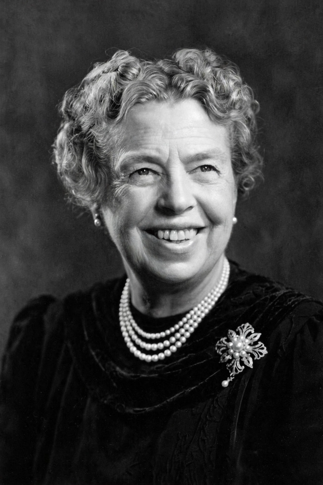

Eleanor Roosevelt
From Wikipedia, the free encyclopedia
Anna Eleanor Roosevelt (11 October 1884 – 7 November 1962) was an American political figure, diplomat and activist, the longest-serving First Lady of the United States (1933–1945) as wife of President Franklin D. Roosevelt. Redefining the role, she held press conferences, wrote a daily newspaper column (“My Day”), travelled indefatigably as her husband's eyes and ears, and championed civil rights, labour and the poor — resigning from the Daughters of the American Revolution in 1939 when it barred the singer Marian Anderson, and helping arrange Anderson's concert at the Lincoln Memorial instead.

Eleanor Roosevelt, chair of the UN Commission on Human Rights, which drafted the Universal Declaration of Human Rights (1948).
After 1945 President Truman appointed her a US delegate to the United Nations, where she chaired the commission that drafted the Universal Declaration of Human Rights (adopted 10 December 1948) — the work she regarded as her greatest achievement, and for which she was called “First Lady of the World”. She remained a force in Democratic politics and human-rights advocacy until her death.
See also
See also
Universal Declaration of Human Rights · Human rights · International Bill of Human Rights